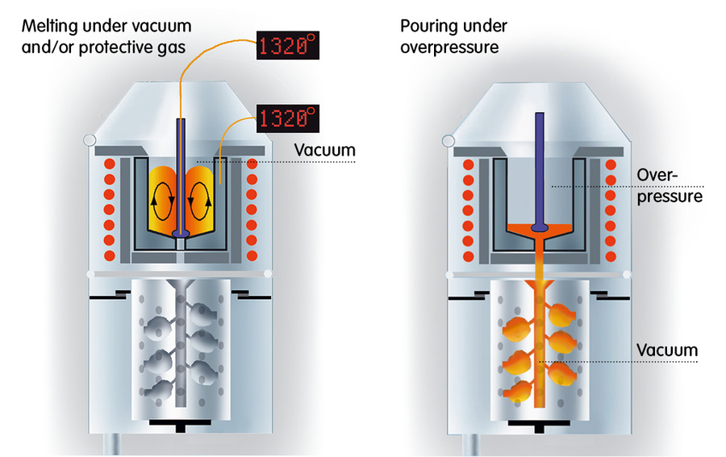
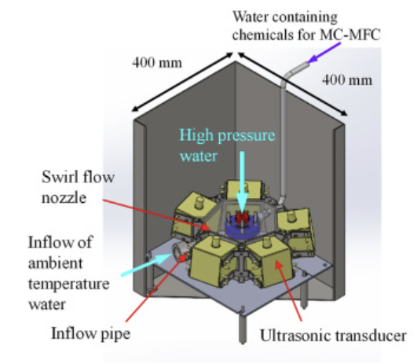
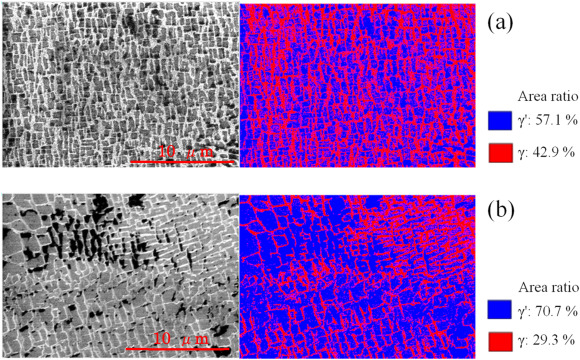
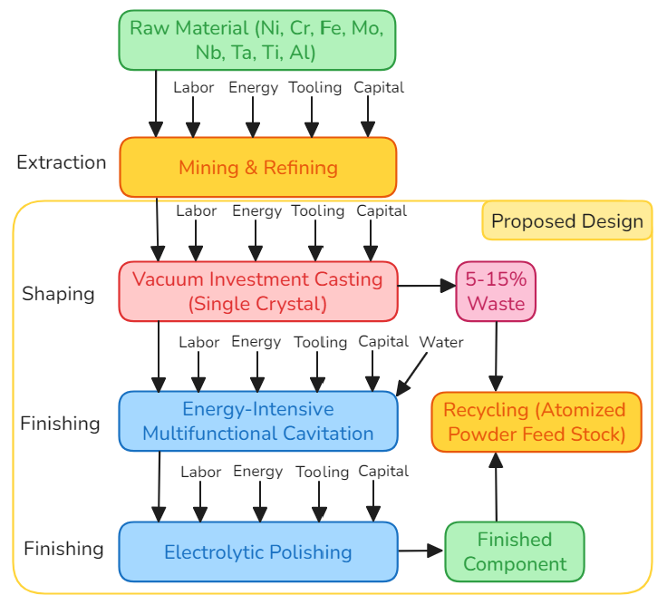

Superalloy Design for Oxygen & Hydrogen Embrittlement Resistance
A materials selection and manufacturing study for a hydrogen-fueled gas turbine blade, conducted with a 5-person team, Team Metalheads, for EMA4714.
Problem
Nickel-based superalloys are the industry standard for turbine blades due to their high-temperature strength and creep resistance, but two degradation mechanisms limit their service life in demanding environments: oxygen-assisted intergranular cracking (OAIC), where oxygen diffuses along grain boundaries and forms brittle oxide paths, and hydrogen embrittlement (HE), where hydrogen accumulates at grain boundaries and weakens atomic bonding. Both are especially relevant for the next generation of hydrogen-fueled gas turbine engines, where blades face oxidizing atmospheres, centrifugal loading, and hydrogen exposure simultaneously, above 650°C.
The goal was to design an alloy and manufacturing route that resists both failure modes while remaining manufacturable and cost-competitive, without relying on expensive thermal barrier coatings.
Material Selection
Candidate materials were compared using a combined material index, M = (KIC · σy) / (ρ · C²), rewarding high fracture toughness and yield strength while penalizing density and cost. Inconel 718, Hastelloy X, CMSX-4, and UMCo-50 were all evaluated against this index and an Ashby chart comparison.
Inconel 718 was selected as the final material. It combines high strength, corrosion resistance, and strong fabricability into complex geometries, and is precipitation hardenable, meaning its mechanical properties can be tuned through controlled heat treatment. Design targets were set at fracture toughness greater than 80 MPa√m, yield strength greater than 100 ksi, and hydrogen diffusivity below roughly 10−12 cm²/s.
Manufacturing: Vacuum Investment Casting
The blade is grown as a single crystal via vacuum investment casting (VPIC), eliminating grain boundaries entirely, the pathways oxygen and hydrogen rely on to diffuse and embrittle the material. Casting under vacuum prevents oxide and nitride formation that would otherwise weaken the reactive superalloy during solidification, while a helical starter channel filters out competing grains so a single crystal orientation grows from the chilled base.

Post-Processing: EI-MFC & Electropolishing
After casting, the blade undergoes Energy Intensive Multifunctional Cavitation (EI-MFC), an ultrasonic treatment where collapsing cavitation bubbles impart highly localized shock waves to the surface, inducing a compressive residual stress layer and hardening the material. In Inconel 718, this process increased the area fraction of the strengthening γ′ phase from 57.1% to 70.7% in the tested samples, which matters because the γ′ phase has roughly an order of magnitude lower hydrogen diffusivity than the surrounding γ phase, directly reducing hydrogen transport toward grain boundaries.


A final electropolishing step removes surface roughness, burrs, and stress concentrators via anodic dissolution, producing an aerodynamic, ultraclean surface that also eliminates high-stress hydrogen trapping sites.

Cost Analysis
I built the cost model for a 100-unit production batch, covering materials, labor, overhead, tooling, and non-recurring R&D costs.
Material cost turned out to be a minor share of the total, roughly $3 per part, while direct labor dominated recurring cost at $1,000 per blade, reflecting the manual intensity of wax pattern preparation, ceramic shell fabrication, and post-processing. Non-recurring costs totaled approximately $173,000, split between capital equipment ($65,000, including the VPIC furnace and EI-MFC ultrasonic system) and R&D and certification ($100,000), reflecting the experimental nature of EI-MFC as a non-standard process.
Outcome
All four design objectives were met: fracture toughness and yield strength targets were satisfied through the material index selection, hydrogen embrittlement resistance was achieved through Inconel 718's alloy design combined with EI-MFC's effect on the γ/γ′ interface, and sustainability was improved alongside a proposed cost reduction of roughly $1,700 relative to baseline approaches, while lowering the overall environmental impact of the manufacturing route.